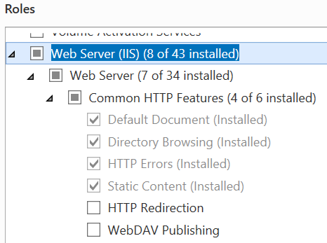
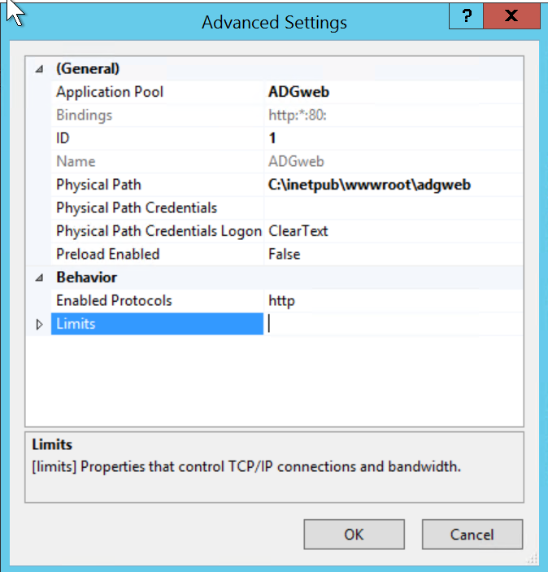
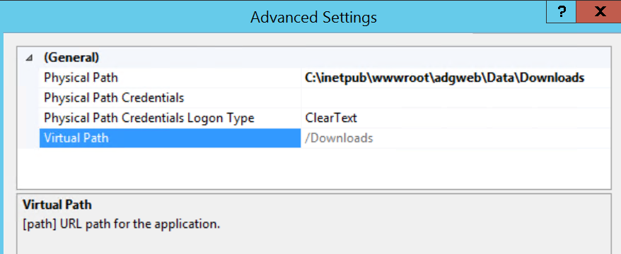

Extension Module Installation and Startup
Prerequisites
- A complete, up-to-date Creo Elements Direct Modeling installation.
- Licenses for Modeling and ADG
- Other licenses which are required to perform the operations within this configuration. Typical modules may include GD&T, Parametrics, Assembly, or database licenses.
- Microsoft .NET Framework.
Installation Planning
The ADG has several components:
- The ADG Modeling extension. A Modeling module to perform document generation tasks in the background.
- The ADG service. Typically runs as Windows service to orchestrate one or more Modeling worker processes.
- The ADG webservice. A service component to allow submission of ADG jobs via a web interface.
The component specific installation is described in the following sections.
Installing the ADG Modeling Extension
To perform a successfull installation of this Modeling extension module it is necessary to understand the relationship between the module startup configuration options and the module install location. Please read section Loading/Activating the extension module in Modeling before installing the module.
Installation from ZIP Archive
The
ADGServiceextension module is shipped in a single ZIP archive. It can be installed in one of the following ways:
Using the Installer (recommended)
The extension module comes with an installer written in Lisp (
install.lsp). This installer is located at the root diectory of the ZIP archive. To install the extension module using the installer follow these steps:
- Unpack the ZIP archive to a temporary loctation.
- Start a version of Modeling supported by this extension module.
- In Modeling load
install.lsp.by one of the following methods:
- Open the Load dialog by clicking on
File --> Open...or by typing theCTRL-Okeyboard shortcut, and then choose theLISP sourcefile type from the File type options. Browse to the directory the module got unpacked to, and then selectinstall.lsp.- Load
install.lspfrom the Modeling command line by typing the Lisp expression:; '...' = path to the unpacked ZIP archive (load ".../install.lsp")- Upon loading the installer, the extension module installation dialog opens. Make sure you understand the implications of the load and startup configuration of this module as described in the next section. If you need some explanation about any of the install options, click the help button ❔ at the top right corner of the dialog.
- Select an installation location and/or startup option and click the Confirm button. The module will be installed to the selected loaction and is ready for use.
Manual Installation
The extension module is portable and can be unpacked in any desired directory and executed from there.
Loading/Activating the Extension Module in Modeling
To use the functionality provided by the extension module it needs to be first loaded into Modeling.
The module can be then activated manually (interactively) or automatically when Modeling starts:
Loading the Extension Module Interactively
Open the Load dialog by clicking on
File --> Open...or pressing theCTRL-Okeyboard shortcut and then choose theLISP sourcefile type from the File type_ options. Browse to the 'ADGService' directory in the module's installation and then selectstartup.lsp.Load
startup.lspfrom the Modeling command line by typing the Lisp expression:; '...' - path to the module's installation directory (load ".../ADGService/startup.lsp")Some Commands to Try
Type any of the following commands into the Modeling command line and press Enter to execute:
; Show information about the `ADGService` extension module (adg:about-module) ; Show help information (adg:display-module-help)
Automatically Loading the Module when Modeling Starts (Autoload)
The extension module can be loaded automatically on Modeling startup by adding startup code to one of the
sd_customizefiles:; '...' is the module installation directory (load ".../ADGService/startup.lsp")As described in the Customization Guide for Administrators and Advanced Users (Modeling documentation),
sd_customizefiles can exist in any of the Modeling customization directories:
- SD (factory level)
- Corp (corporate level)
- Site (site level)
- User (user level)
It is recommended to let the install dialog add this entry the optimal
sd_customizefile by checking the Load when Modeling starts option. The installer automatically chooses the optimalsd_customizefile location for the selected install location.
Module 'On-Demand' Activation / Deactivation
Once the module is loaded it needs to be turned on (activated) using the Modeling Module Management Dialog which opens when you click on
File -> Modules .... All loaded CADM extension Modules can be found in theCADM Extensionssection.To activate/deactivate a CADM module check/uncheck it in the dialog.
Activating the Module when Modeling Starts
To activate the module automatically when Modeling starts, perform these steps:
- Open the Modeling Module Activation dialog by clicking on
File -> Modules ... -> Startup ....- Select the module to auto-activate from the Modules list on the right side.
- Click 'Add -->' to add the module to the Modeling Startup Sequence.
Loading a Previous Version of the Module
All versions of a module are installed side-by-side. By default the newest installed version is started. In case is should be necessary to temporarily or permanently revert back to an older version of the module, this can be easily achieved by editing the module's
startup.lspfile ".../ADGService/startup.lsp"....represents the module's install location. The top of thisstartup.lsplooks like this:(in-package :cadm-extension-installer :use '(:lisp :oli)) (let ((module-version "1.2.8") ; <-- change this version ... )To start an older version replace the current version with another installed version and save the changes.
Uninstalling the Module
CADM extension moduled are portable and can be easily deinstalled by deleting the module directory.
To delete a particular version of the module, delete the version directory from the module's installation directory and update the ".../ADGService/startup.lsp" file to load one of the remaining versions as described in the previous section.
To delete all versions of the module delete its installation directory and remove the load configuration from
sd_customizeorpesd_startup.
The ADG Windows Service
The ADG Service which orchestrates Modeling worker processs is located in the installation directory of the Modeling extension module in the adg subfolder.
To register ADG as Windows service:
- Open a DOS cmd shell as administrator
cdto theadgsub-directory of the ADG installation folder.- Execute
ADGService -ito register the ADG as Windows Service. After registration the ASG service is available in the Services application:Note: Before the service is started it should be configured. Please see ADG Service Configuration and Customization
Note: The service can be started via the Services application or by executing
net start ADGin the dos shell.

Unregister the ADG Service
To unregister ADG as Windows service follow these steps:
- Stop the ADG service in the Services application or from a DOS administrator shell by executing
net stop ADG- Open a DOS cmd shell as administrator
cdto theadgsub-directory of the ADG installation folder.- Execute
ADGService -uto unregister the ADG as Windows service. Note: This stops all worker processes. All unfinished jobs are lost.
The ADG Webservice
The web user interface of the ADG runs on IIS (Internet Information service). It uses ASP.net 5: technology
Preparing IIS in Windows Server (2012 R2)
In the Server Manager application open the Add Roles and Features dialog and make sure the Web Server role is at least configured like so:

To enable the Blazor technology used in the ADG web service the ASP.NET Core Runtime 5.0.0 Hosting Bundle, which includes the .NET Runtime and IIS support needs to be downloaded and installed.
Deploying Modeling on the server
The ADGweb web service uses a Modeling installation in the background to process jobs coming in via the web service.
- Install Modeling. If necessary also install the MEls license server
- Start Modeling and install the ADGservice extension using the installer. Use following options:
- Choose Custom Install Location
c:/- Uncheck Load always on startup.
Deploying the ADG web service components to IIS
- copy the
adgwebdirectory from the ZIP package toc:/inetpub/wwwroot- Create following directories if they do not exist:
c:/inetpub/wwwroot/adgweb/Data/Uploadsc:/inetpub/wwwroot/adgweb/Data/Downloads- Make sure
c:/inetpub/wwwroot/adgweb/Data/Uploadshas write permission user ``IIS_IUSRS`.- Open the Internet Information Services (IIS) Manager and create a new application with following parameters: 
- Create a new Virtual Directory mapping for
Downloadstoc:/inetpub/wwwroot/adgweb/Data/Downloads
Configuring the ADGservice
The ADGservice can run from the recommended install location
c:/ADGservice. To work with theADGwebweb service following configuration is necessary.
- To be able run the ADGservice as interactive admin user, allow Full Control to
c:/inetpub/wwwroot/adgweb/Dataand its sub-directories.- Configure the ADGservice by editing ADGservice.exe.config like so:
<?xml version="1.0" encoding="utf-8" ?> <configuration> ... <appSettings> <!-- Fully qualified Path to a Modeling executable (SolidDesigner.exe) to use as ADG worker. --> <add key="ADG_WORKER_LOCATION" value="C:/Program Files/PTC/Creo Elements/Direct Modeling 20.1/binx64/SolidDesigner.exe" /> <!-- When Modeling does not send any request before this timeout occurs, it is restarted. --> <!-- Time is in minutes --> <add key="ADG_WORKER_TIMEOUT" value="5" /> <!-- Time to wait until the ADG worker (Modeling) has connected --> <!-- Time is in minutes --> <add key="ADG_START_TIMEOUT" value="2" /> <!-- Number of concurrent worker (Modeling) processes --> <add key="ADG_MAX_WORKER_COUNT" value="1" /> <!-- License server host --> <add key="ADG_MELS_HOST" value="win7x64-vm-lab" /> <!-- relative path to ADG startup file ()--> <add key="ADG_STARTUP_FILENAME" value="startup" /> <!-- Fully qualified path to a ADG working directory --> <!-- When emtpy the directory 'work_dir' in the ADG service installation directory is used --> <add key="ADG_WORK_DIR" value="C:/inetpub/wwwroot/adgweb/Data/Work" /> <!-- Fully qualified path to the ADG input directory --> <!-- When emtpy the directory 'input_dir' in the ADG service installation directory is used --> <add key="ADG_INPUT_DIR" value="C:/inetpub/wwwroot/adgweb/Data/Uploads" /> <!-- Fully qualified path to the ADG output directory --> <!-- When emtpy the directory 'output_dir' in the ADG service installation directory is used --> <add key="ADG_OUTPUT_DIR" value="C:/inetpub/wwwroot/adgweb/Data/Downloads" /> <!-- Fully qualified path to the ADG log directory --> <!-- When emtpy the directory 'logs' in the ADG service installation directory is used --> <add key="ADG_LOG_DIR" value="C:/inetpub/wwwroot/adgweb/Data/Logs" /> <!-- Maximum time a worker may run before it is restarted --> <!-- Time is in minutes --> <add key="ADG_MAX_UPTIME" value="1440" /> <!-- Hostname ot IPV4 Address of the SMTP Server --> <add key="ADG_SMTP_HOST" value="hydrogen.portfast.net"/> <!-- SMPT Port --> <add key="ADG_SMTP_PORT" value="25"/> <!-- SMPT User Name --> <add key="ADG_SMTP_USER" value="adgweb@cadm-inc-us.com"/> <!-- SMPT Password --> <add key="ADG_SMTP_PASSWORD" value="********"/> <!-- SMPT connection encryption --> <!-- T to use SSL to encrypt the connection; NIL to disable encryption --> <add key="ADG_SMTP_USE_SSL" value="T"/> <!-- ADG service sender email address --> <!-- When ADG sends out emails this address is used. --> <!-- Preferrably an existing address so that recipients can reply to it. --> <add key="ADG_SERVICE_MAIL_FROM" value="adgweb@cadm-inc-us.com"/> <!-- One or more comma separated email addresses of ADG Administrators. --> <!-- Status and error emails will be sent to these email addresses. --> <add key="ADG_ADMINISTRATOR" value="peter.ernst@cadm-inc-us.com"/> <!-- `CONTINUOUS` Keep all worker processes running continously. --> <!-- New jobs are picked up from `ADG_INPUT_DIR` by idle workers. --> <!-- `ON-DEMAND` Start a single, dedicated worker process for each job --> <!-- appearing in `ADG_INPUT_DIR`. --> <add key="ADG_MODE" value="ON-DEMAND"/> </appSettings> </configuration>